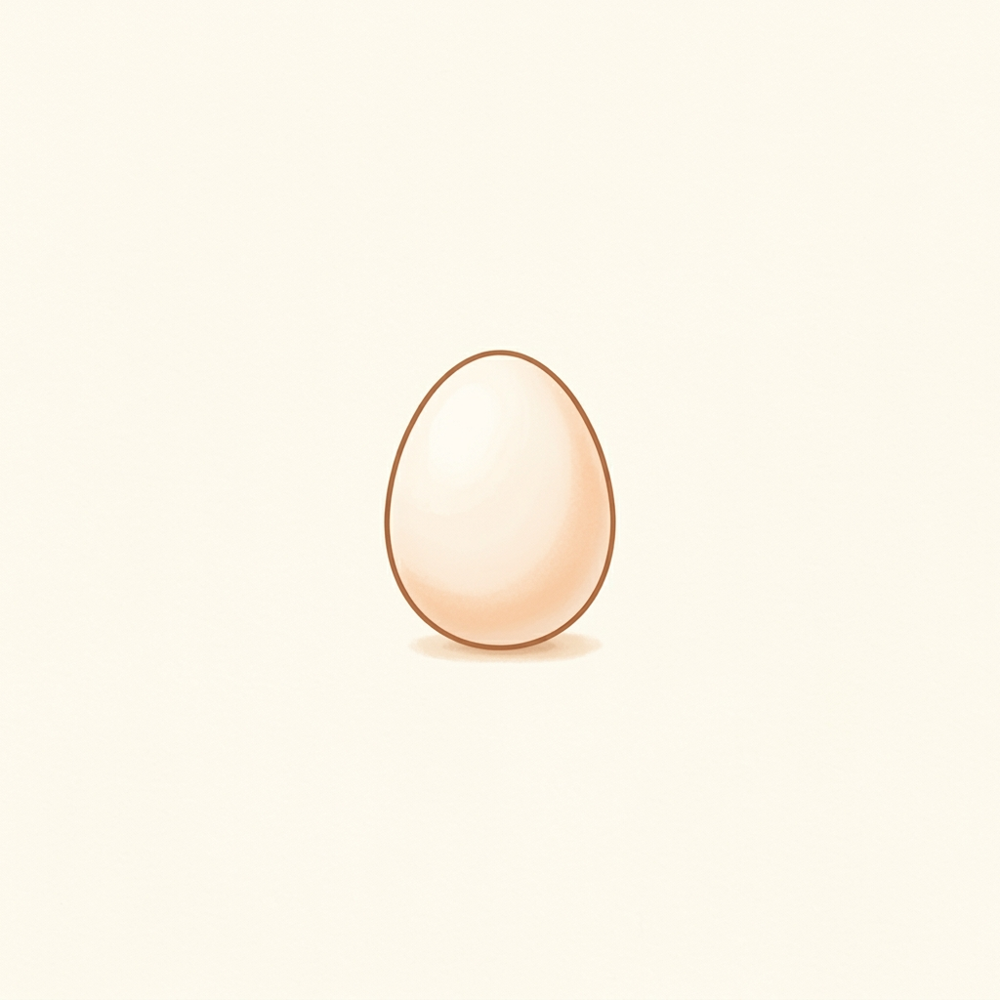
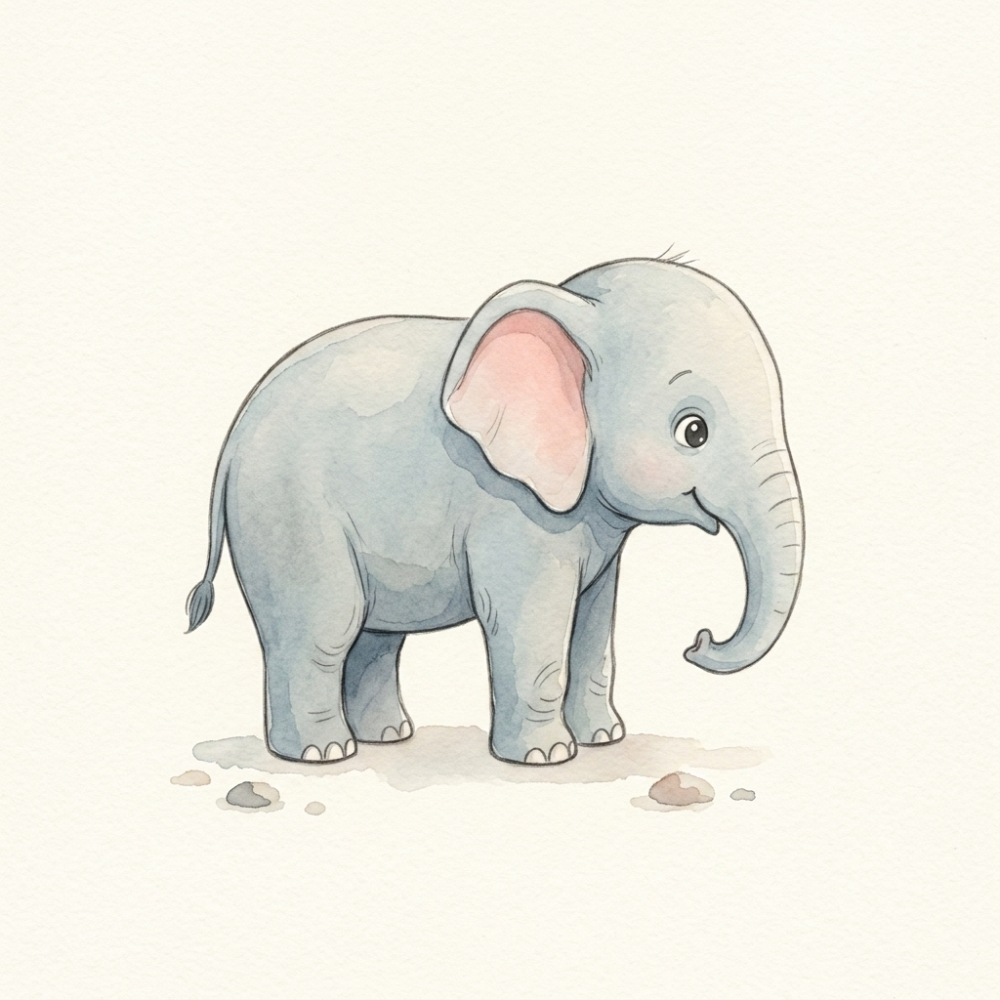
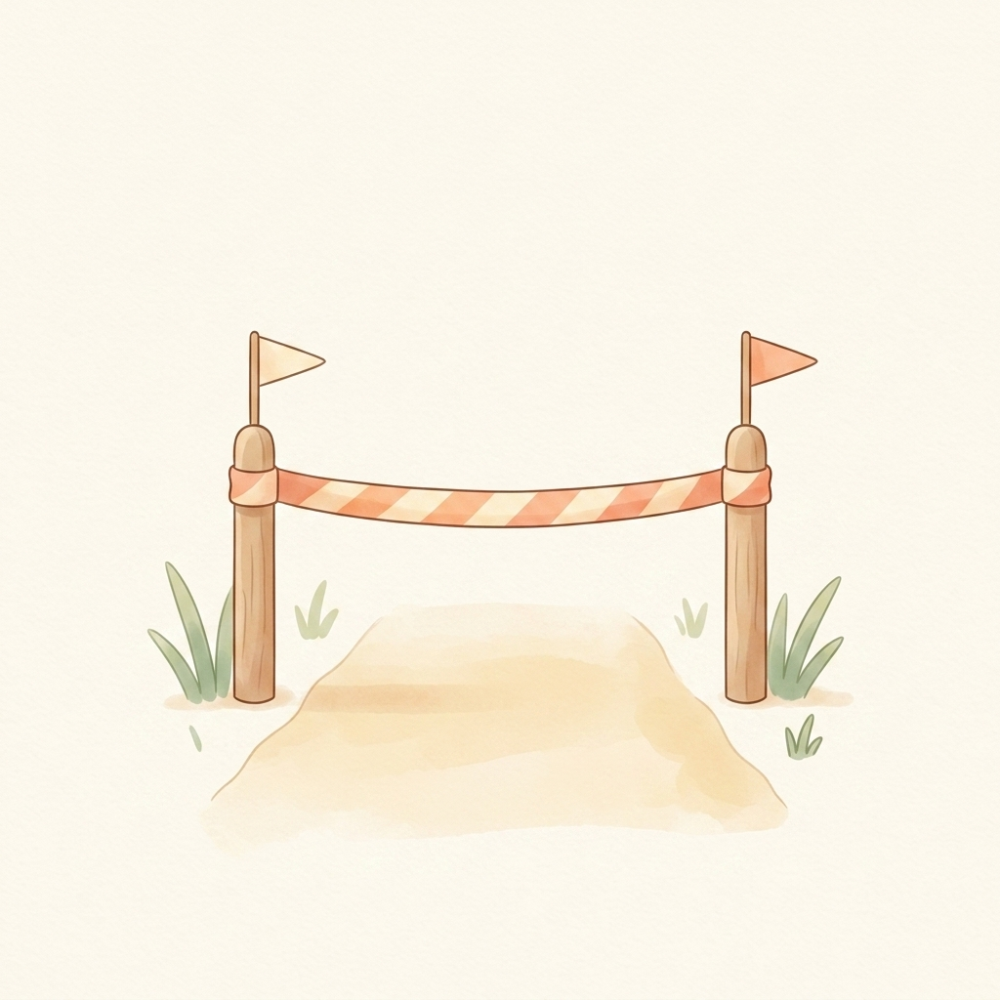
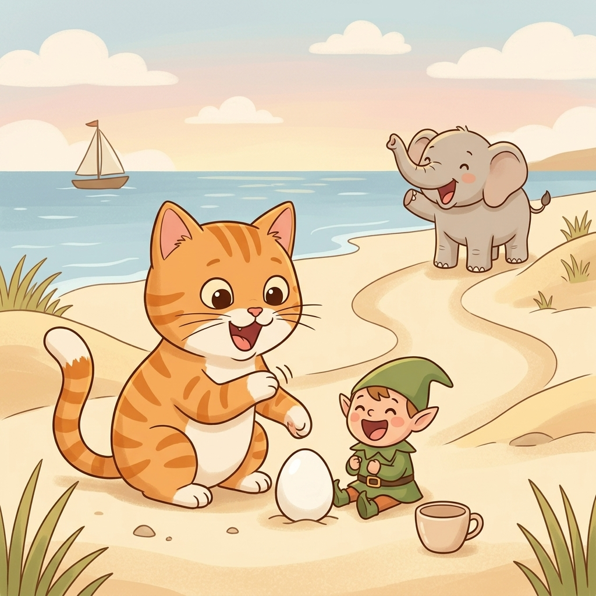
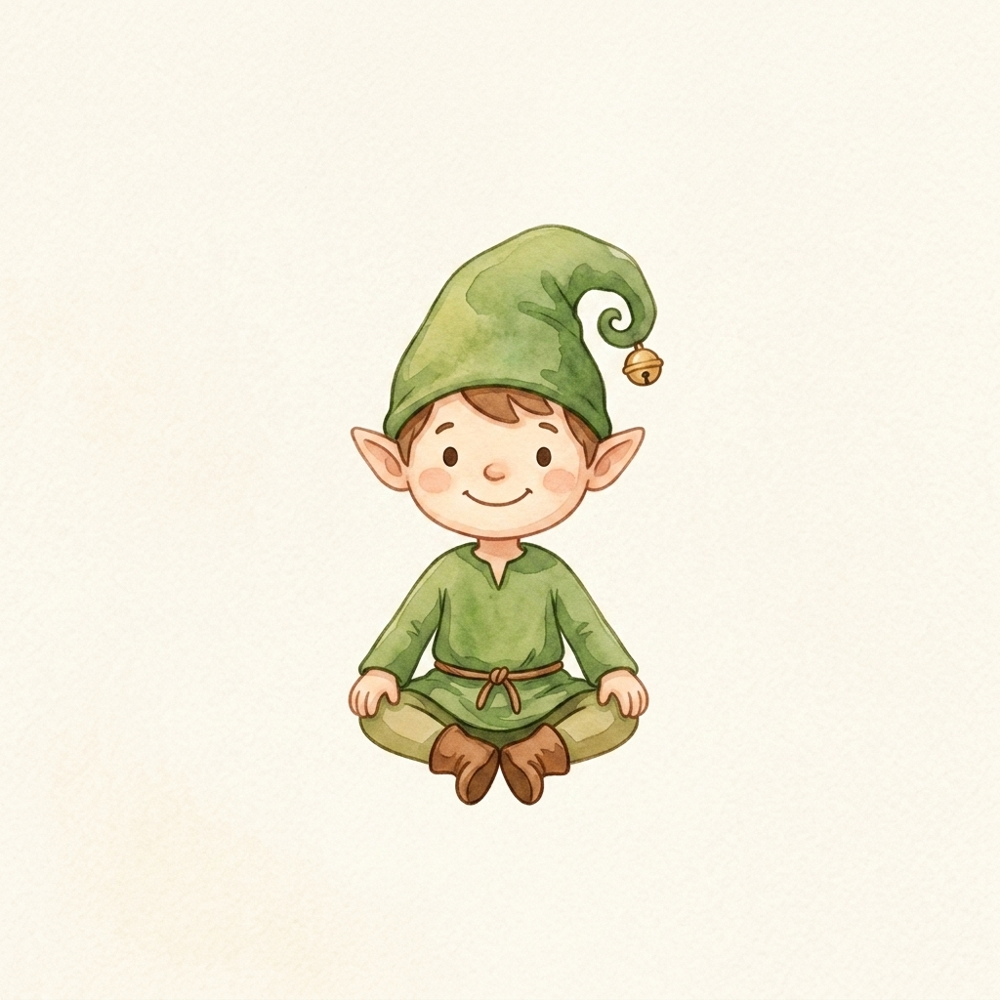
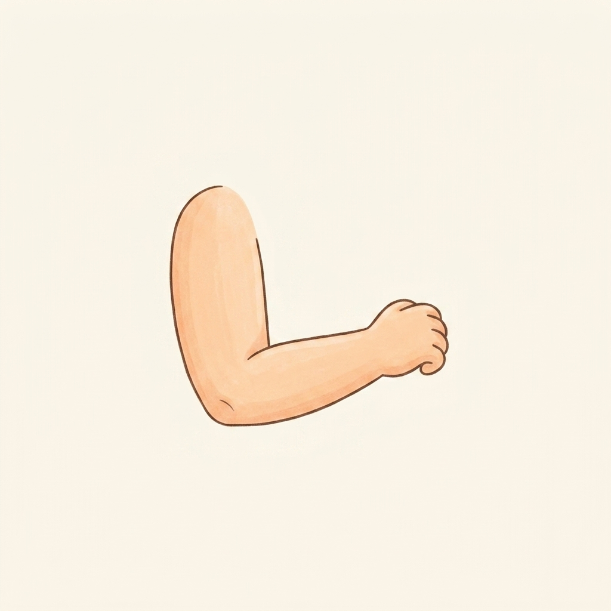
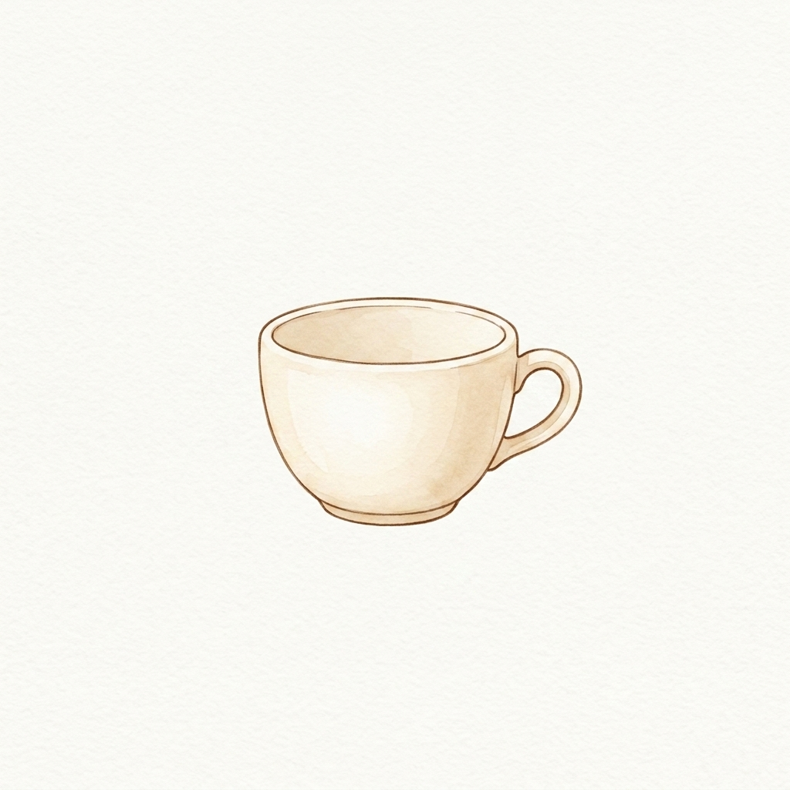

Step 1 · Say the Sound
E
E can say /ɛ/, like egg.

egg
elephant
endSay one sound. Read a few words. Read one tiny story with Cat.

E can say /ɛ/, like egg.

egg
elephant
end


Cat saw an egg.
An elf sat by the egg.
An elephant came to the end.
The cup was empty.
Cat bumped an elbow.
Everyone said, ‘E!’
Now you learned E.
That’s a win.
If it still feels fun, read the story again.